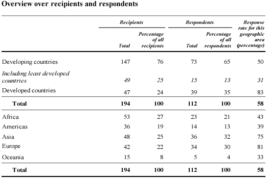

UN survey responses
The table below was published in a United Nations report describing the results of a survey of countries about implementation of a set of 'Fundamental Principles of Official Statistics' by their National Statistics Offices. The table summarises which countries responded to the survey questionnaire.
|  |
This table contains:
- Two frequency tables — separately categorising the countries that were sent the questionnaire (recipients) and those returning the completed questionnaire (respondents) by region.
- Two tables that categorise recipients and respondents by development category. (Their presentation is non-standard since the least developed countries are included in both of the first two rows.)
- A column of response rates for each development category and region.
Because the columns of frequencies are not adjacent and the columns of percentages are not adjacent, comparisons are harder. A better format for the table groups together the columns of related values and separates these groups with white space.
(We have also made improvements to the column headings and replaced the first two rows of the table with the country categories Least developed and Other developing to form a standard frequency table.)
 |
Textual summary
A description of the table in the report should point out the much higher
response rates in the developed countries, and particularly in Asia and
Europe. As a result, the
least developed countries (especially Oceania, the Americas and Africa)
are under-represented in the survey and in the remainder of the report.